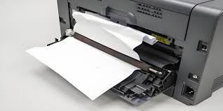

Our Blog Posts
কে আর টেকনোলজির সর্বশেষ টিপস, ট্রিকস এবং প্রযুক্তি সম্পর্কিত তথ্য জানতে আমাদের ব্লগ বিভাগে ভিজিট করুন। এখানে আপনি আমাদের সেবা এবং প্রযুক্তি বিশ্বের নানা দিক সম্পর্কে আরও জানতে পারবেন।
Md. Kawsar Uddin
Founder of KR Technology & Service Manager
Live nowপ্রিন্টার ঠিকভাবে রক্ষণাবেক্ষণের ৫টি সহজ উপায়
বর্তমান সময়ে প্রিন্টার আমাদের দৈনন্দিন কাজের একটি অপরিহার্য যন্ত্র। অফিস, দোকান, স্কুল কিংবা বাসা—সব জায়গাতেই প্রিন্টারের প্রয়োজন হয়। কিন্তু অনেক সময় দেখা যায় প্রিন্টার কয়েক মাস ব্যবহার করার পরেই নানা সমস্যায় পড়ে, যেমন – কাগজ আটকে যাওয়া, প্রিন্ট হালকা হয়ে যাওয়া বা কালি ছিটানো ইত্যাদি।
এগুলোর বেশিরভাগ সমস্যাই সঠিক রক্ষণাবেক্ষণের অভাবে হয়। নিচে কিছু সহজ টিপস দেওয়া হলো যেগুলো অনুসরণ করলে আপনার প্রিন্টার দীর্ঘদিন ভালো থাকবে.....
1️⃣ নিয়মিত পরিষ্কার রাখুন – প্রিন্টারের ভেতরে ধুলা জমলে প্রিন্টের মান নষ্ট হয়। সপ্তাহে একবার নরম কাপড় দিয়ে পরিষ্কার করুন।
2️⃣ ভালো মানের কালি ব্যবহার করুন – নিম্নমানের কালি প্রিন্ট হেড নষ্ট করে দিতে পারে।
3️⃣ প্রিন্টার বন্ধ রাখবেন না দীর্ঘ সময় – নিয়মিত ব্যবহার করলে ইনক শুকিয়ে যায় না।
4️⃣ সফটওয়্যার আপডেট রাখুন – অনেক সময় ড্রাইভার আপডেট না থাকলে প্রিন্টিং সমস্যা দেখা দেয়।
5️⃣ অতিরিক্ত প্রিন্ট এড়িয়ে চলুন – ধারাবাহিক অনেক বেশি প্রিন্ট করলে প্রিন্টারের মোটর গরম হয়ে যায়।
👉 চৌমুহনী, আগ্রাবাদ, চট্টগ্রামে অবস্থিত কে আর টেকনোলজি সব ধরনের প্রিন্টার সার্ভিসিং, রক্ষণাবেক্ষণ ও রিপেয়ারিং সেবা দিয়ে থাকে।
Md. Kawsar Uddin
Founder of KR Technology & Service Manager
Live nowপ্রিন্টারে কাগজ আটকে গেলে কী করবেন?

“Paper Jam” বা কাগজ আটকে যাওয়া হলো সবচেয়ে সাধারণ প্রিন্টার সমস্যা। অনেক সময় তাড়াহুড়ো করে প্রিন্ট করতে গিয়ে বা নিম্নমানের কাগজ ব্যবহারে এই সমস্যা দেখা দেয়।
🧾 সমাধানের ধাপগুলো নিচে দেওয়া হলো:
1️⃣ প্রিন্টার বন্ধ করুন এবং পাওয়ার সংযোগ খুলে দিন।
2️⃣ কভার খুলে ভেতরে কোথায় কাগজ আটকে আছে দেখুন।
3️⃣ ধীরে ধীরে কাগজ টানুন, জোর করে টানবেন না।
4️⃣ আটকে থাকা ছোট কাগজের টুকরা বের করে পরিষ্কার করুন।
5️⃣ প্রিন্টার পুনরায় চালু করে একটি টেস্ট প্রিন্ট দিন।
👉 যদি বারবার কাগজ আটকে যায়, তাহলে প্রিন্টারের রোলার বা সেন্সরে সমস্যা থাকতে পারে।
এই ক্ষেত্রে নিজে মেরামত না করে পেশাদার সার্ভিস নিন।
কে আর টেকনোলজি, দোকান নং: বি-৫, মির্জা আহমেদ সুপার মার্কেট, চৌমুহনী, আগ্রাবাদ, চট্টগ্রাম —
আমরা যেকোনো ব্র্যান্ডের প্রিন্টারের Paper Jam সমস্যা দ্রুত ও নিরাপদে সমাধান করে থাকি।
Md. Kawsar Uddin
Founder of KR Technology & Service Manager
Live nowপ্রিন্টারের কালি শেষ হয়ে গেলে করণীয় কী?
প্রিন্ট আউট হালকা হয়ে যাওয়া, লাইন দেখা যাওয়া বা একদম ফাঁকা পেজ বের হওয়া—এই সমস্যাগুলো সাধারণত কালি শেষ হয়ে গেলে দেখা দেয়। কিন্তু সব সময় কালি শেষই একমাত্র কারণ নয়। অনেক সময় ইনক কার্টিজে বাতাস ঢুকে প্রিন্ট বন্ধ হয়ে যায়, বা হেড ক্লগ হয়ে কালি আসা বন্ধ হয়।
🎯 সমাধান:
1️⃣ প্রথমে কার্টিজ ঝাঁকিয়ে আবার বসিয়ে দিন।
2️⃣ প্রিন্ট হেড ক্লিন করুন (প্রিন্টার সফটওয়্যারের মাধ্যমে)।
3️⃣ তবুও সমস্যা থাকলে কালি রিফিল করুন বা নতুন কার্টিজ ব্যবহার করুন।
4️⃣ নিয়মিত প্রিন্ট দিন, যাতে ইনক শুকিয়ে না যায়।
🖨️ কে আর টেকনোলজি, চৌমুহনী, আগ্রাবাদ, চট্টগ্রাম — আমরা HP, Canon, Epson, Brother সহ সব জনপ্রিয় ব্র্যান্ডের ইনক রিফিল ও কার্টিজ রিপ্লেসমেন্ট সার্ভিস প্রদান করি।
যোগাযোগ করুন
Shop Location
Shop No:B-5, Mirza Ahmed Super Market.
Chowmuhani , Agrabad , Chittagong
Phone: 01825-757576
Phone: 01820-003845
Email: krtechnologyctg@gmail.com